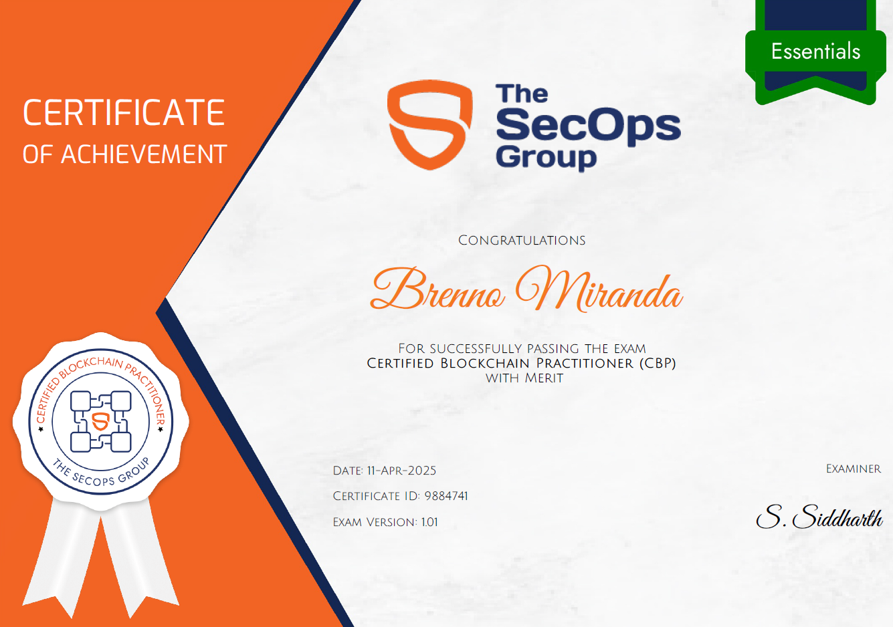

The CBP, Certified Blockchain Practitioner, offered by The SecOps Group, is a certification focused on
blockchain technology fundamentals, as well as its implementations, technical specifications, and use
cases, with emphasis on Ethereum.
On 04/11/2025, I took the exam and passed with merit.

Topics Covered
Regarding the certification scope, the following topics are covered:
- Understanding the Basics
- Nodes
- Mining
- Consensus Algorithm
- Transactions
- Forks
- Smart Contracts
- Decentralized Apps
- IPFS Fundamentals
- Overview of Ethereum
- Ethereum
- EVM (Ethereum Virtual Machine)
- Ethereum Tokens
- Test Networks of Ethereum
- Proof of Stake
- Proof of Work
- Non-Fungible Token (NFT)
- ERC-721 Standard
- ERC-1155 Tokens
- Metaverse Basics
- Ethereum 2.0 (The Merge)
- Scalability
- Energy Consumption
- Beacon Chain
- Plasma
- Ethereum Tokens (Fungible)
- Ethereum Request for Comments (ERC)
- Ethereum Improvement Proposals (EIPs)
- ERC-20 Standard
- ERC – 884 Standard
- DeFi (Decentralised Finance)
- DAO (Decentralized Automation Organization)
About the Exam
It is a 60-question multiple-choice exam with 60 minutes available for completion. If the candidate scores more than 60%, they will pass and become certified. If they score more than 80%, their certification will include "with merit", evidencing the high percentage of correct answers. The exam covers all topics mentioned in its scope, with questions ranging from blockchain and ethereum concepts, technical specifications, and keyword meanings in this context.During the exam, camera and microphone access is required for physical environment validation and to prevent actions that violate the exam's code of ethics.
Study References for the Exam
- Unofficial Guide to Certified Blockchain Practitioner | https://medium.com/novai-blockchain-101/guide
- Ethereum.org | https://ethereum.org/en/learn/